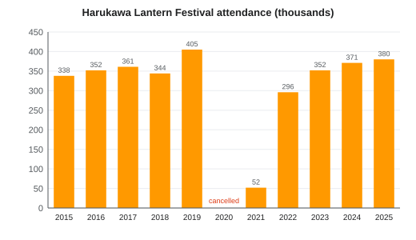

Springvale Lantern Festival
| Springvale Lantern Festival 春川灯籠まつり | |
|---|---|
 Floating lanterns drifting down the Mirror River at dusk | |
| Overview | |
| Type | Memorial lantern festival |
| Dates | Second weekend (Saturday and Sunday) of October |
| 2026 | 10–11 October (282nd) |
| 2025 | 11–12 October |
| Location | Springvale, Harvest Prefecture |
| Venues | Mirror River (Mirror Bridge to Shiomi Bridge), Gofukumachi, Springvale Castle, Harvest Bay |
| History | |
| First held | 1740 |
| Founded by | Asagiri Tadatoki, 6th lord of the Springvale Domain |
| Occasion | Great Genbun Flood, 4 October 1739 |
| Revived | 1947 |
| Scale | |
| Floating lanterns | about 12,000 |
| Hanging lanterns | about 3,500 |
| Lantern floats | 36 |
| Fireworks | 4,000 |
| Attendance | 380,000 (2025) 405,000 (2019, record) |
| Organizer | Springvale Lantern Festival Executive Committee |
The Springvale Lantern Festival (春川灯籠まつり, Harukawa Tōrō Matsuri) is an annual festival held on the second weekend of October in Springvale, the capital of Harvest Prefecture, Japan. It began in 1740 as a memorial for the roughly 1,140 people killed when the Mirror River flooded the castle town on 4 October 1739, and it is best known for the release of about 12,000 floating lanterns on the river below Mirror Bridge on the Saturday evening. On the Sunday the old merchant street of Gofukumachi is hung with about 3,500 painted lanterns as the "Hundred Lantern Road", 36 lantern floats parade from Mirror Shrine to Springvale Castle, and 4,000 fireworks are launched over Harvest Bay.[1]
The 2026 festival takes place on 10–11 October; the organizers count it as the 282nd edition.[a] With 380,000 visitors in 2025 it is the largest annual event in the city and one of the best-attended autumn festivals in western Japan.[citation needed] It became known across the country through Michiyo Tōno's 1956 novel The River Mirror.
Origin[edit]
On 4 October 1739 (Genbun 4), after three days of typhoon rain, the Mirror River overtopped the Masatsugu Embankment on its left bank and flooded the lower castle town. About 1,140 people died, most of them in the riverside fishing quarter of Uomachi and the low ground of Shiomi; it was the worst disaster in the history of the Springvale Domain.[2] The 5th lord, Asagiri Masayoshi, who ruled at the time of the flood, died the following year.
In 1740 his successor, the 6th lord Asagiri Tadatoki, ordered a memorial on the riverbank. Monks of Kōun-ji, the Asagiri family temple, chanted sutras on the riverbank below the castle town, and the families of the dead set paper lanterns bearing their names afloat on the river on the anniversary of the flood in the lunar calendar. The domain supplied the paper and candles each year, and Tadatoki also had the embankment raised and strengthened.[3]
History[edit]
During the Edo period the memorial slowly became a town festival. The merchants of Gofukumachi began hanging lanterns along their street in the 1780s, and in 1836 the Gofukumachi merchants' guild built the first large lantern float; by the end of the Edo period about twenty neighborhoods had their own.[3] The only cancellation under the domain came in 1863, during a cholera epidemic.
Japan adopted the Gregorian calendar in 1873, but the festival kept to the lunar anniversary until 1910, when the city fixed it on 4 and 5 October. In 1911 the confectioner Kikuya of Gofukumachi created tōrō manjū for the festival. The Mirror Line, opened as far as Clayfield in July 1926 and extended to Moonview Spa in 1931, began to bring visitors from Suyama and the upper valley.
The festival was cancelled from 1944 to 1946. The air raid of 29 July 1945 burned 38 % of the urban area and killed 1,072 people, and when the deputy mayor Tetsuo Saeki revived the festival in 1947, lanterns were floated for the air-raid dead as well as for the flood victims; both groups are still remembered at the opening service.[4] Fireworks over the bay were added in 1955. The novel The River Mirror (1956) and its 1960 film made the festival a national attraction.
The Hundred Lantern Road began in 1989 to mark the 250th anniversary of the flood. Biodegradable washi lanterns replaced the old varnished ones in 1998, and since 2000 the festival has been held on the second weekend of October, the weekend before the Sports Day holiday.[b] The 2020 festival was cancelled during the COVID-19 pandemic, and in 2021 a scaled-down festival with timed entry was held without floating lanterns: dedicated lanterns were lit on the riverbank steps instead. Full festivals resumed in 2022.
| Year | Reason | Notes |
|---|---|---|
| 1863 | Cholera epidemic | Only cancellation under the domain |
| 1944–1946 | Second World War | Revived in 1947 |
| 2020 | COVID-19 pandemic | Fully cancelled |
| 2021 | COVID-19 pandemic | Held without floating lanterns, 52,000 visitors |
Programme[edit]
The festival is organized by the Springvale Lantern Festival Executive Committee, made up of the city, the chamber of commerce, Mirror Shrine and the neighborhood associations. The Saturday is devoted to the floating lanterns and the Sunday to the lantern street, the floats and the fireworks. The Sunday is also the day of the Mirror Shrine autumn festival.
| Day | Time | Event | Place |
|---|---|---|---|
| Sat 10 Oct | 10:00–11:00 | Memorial service for the flood and air-raid victims | Kōun-ji |
| Sat 10 Oct | 11:00–17:00 | Lantern dedication stalls (¥800) | Left bank below Mirror Bridge |
| Sat 10 Oct | 12:00–21:00 | Food stalls | Riverbanks between Mirror Bridge and Shiomi Bridge |
| Sat 10 Oct | 17:30 | Lighting of the memorial lantern | Mirror Bridge |
| Sat 10 Oct | 18:00–20:30 | Floating lanterns (tōrō nagashi) | Mirror River, Mirror Bridge to Shiomi Bridge |
| Sun 11 Oct | 10:00 | Autumn festival rites | Mirror Shrine |
| Sun 11 Oct | 14:00–17:00 | Procession of 36 lantern floats | Mirror Shrine to Springvale Castle via Sagimai Avenue |
| Sun 11 Oct | 17:00–21:30 | Hundred Lantern Road lit | Gofukumachi |
| Sun 11 Oct | 19:30–20:15 | Fireworks (4,000 shells) | Harvest Bay, off Uomachi |
| Both days | 9:00–20:00 | Castle keep open late (last entry 19:30) | Springvale Castle |
| Both days | 15:00–22:00 | Road closures | Castle Town and Gofukumachi |
Floating lanterns[edit]
The floating lanterns (灯籠流し, tōrō nagashi) are the core of the festival. Anyone may dedicate a lantern for a fee of ¥800, either online from 1 September or at the stalls on the riverbank on the Saturday until 17:00; the 12,000 lanterns usually sell out by mid-afternoon.[1] The dedicator writes the name of the person remembered, or a wish, on the lantern's paper. Volunteers launch the lanterns from pontoons just below Mirror Bridge between 18:00 and 20:30, and the current carries them 1.4 km downstream to Shiomi Bridge, where nets stretched across the river catch them.
Each lantern is a box of Moonview washi, the paper made in the town of Moonview in the upper valley, on a base of unpainted cedar, lit by a short candle. Until 1997 the paper was varnished and the bases painted; after oyster farmers complained about debris reaching Harvest Bay, the committee switched in 1998 to biodegradable washi and plant-based glue. The collected paper is composted and most cedar bases are reused the following year.[5]
Hundred Lantern Road[edit]

On the Sunday the 620 m shopping street of Gofukumachi, the old merchant quarter between the castle and the river, becomes the Hundred Lantern Road (百灯籠通り, Hyaku Tōrō Dōri). Despite the name, about 3,500 hanging lanterns are strung in rows over the street. They are painted by citizens and schoolchildren during September; every elementary school in the city sends a set, and the designs are often herons, the castle, yuzu and the river. The lanterns are lit from 17:00 to 21:30 and the street is closed to traffic.
Floats and fireworks[edit]
The procession of 36 large lantern floats (灯籠山車, tōrō-dashi) leaves Mirror Shrine at 14:00 on the Sunday and reaches Castle Park at about 17:00, along Sagimai Avenue. Each float is built and pulled by a neighborhood association; the tallest stand about 6 m high and carry several hundred lanterns arranged as herons, carp or scenes from the Genbun flood. The floats are lit at dusk in front of Sagimai Gate, where a jury awards the Lord's Prize to the best float.
At 19:30 about 4,000 fireworks are fired from barges on Harvest Bay off the Uomachi fishing port. The display lasts about 45 minutes and is best seen from the Uomachi quays and the seaside park at Rose Garden.
Attendance[edit]


The committee's estimates count both days together.[c] Attendance reached a record 405,000 in 2019. Rain on the Saturday reduced the 2018 figure, and numbers recovered after the pandemic to 380,000 in 2025, the second-highest on record.[6] The festival is one of the main attractions counted in the city's tourism statistics; see Economy of Springvale.[7]
| Year | Attendance | Notes |
|---|---|---|
| 2015 | 338,000 | |
| 2016 | 352,000 | |
| 2017 | 361,000 | |
| 2018 | 344,000 | Rain on the Saturday |
| 2019 | 405,000 | Record |
| 2020 | — | Cancelled |
| 2021 | 52,000 | Scaled down, no floating lanterns |
| 2022 | 296,000 | First full festival since 2019 |
| 2023 | 352,000 | |
| 2024 | 371,000 | |
| 2025 | 380,000 |
Transport and safety[edit]
The Springvale Railway runs extra late local trains on both lines on the two festival evenings, in addition to its weekend timetable. In 2026, on 10 and 11 October, the extra trains on the Mirror Line run from Clayfield to Springvale Central at 17:20 and 18:20, from Springvale Central to Clayfield at 21:40 and 23:25, and from Springvale Central to Red Canyon at 22:30; on the Bayside Line they run from Springvale Central to Ferry Port at 21:15, 21:45, 22:15, 22:45 and 23:30. No extra limited expresses run: the Comet keeps its normal timetable, but its peak-date surcharge of ¥200 applies from 10 to 12 October, and Comet 21, 24, 25 and 28 do not stop at Castle Town on the two festival days.[8] Castle Town Station, the closest to the lanterns and the castle, is the busiest station on the festival evenings, and entry to it may be restricted from 18:00 to 21:30. The railway advises visitors to use Springvale Central Station, about 20 minutes' walk along the river, and to buy return tickets or charge their RideCard cards in advance.
Roads in Castle Town and Gofukumachi are closed to cars from 15:00 to 22:00 on both days, and Mirror Bridge is closed to vehicles during the lantern release. After a crowd surge on the bridge injured 17 people in 1979, the police introduced one-way pedestrian routes on the bridges; about 1,300 police officers and security staff are now on duty each evening.[citation needed] Boats are kept off the river between the two bridges during the release.
In culture[edit]
Michiyo Tōno's novel The River Mirror (1956) tells the story of the 1739 flood and the first lantern memorial through Osayo, a young woman of Uomachi who loses her family in the flood and sets the first lantern on the river. It was filmed in 1960, with the lantern scenes shot at the 1959 festival, and adapted for television in 1978, and both brought large numbers of visitors to the festival.[3] Lanterns on the river also appear in her later novel Lanterns at Low Tide (1962), and in Moonview Diary (1980) she recalled watching the festival as a child from the Uomachi quay.[9] The city's Michiyo Tōno Literary Prize, founded in 1989, is presented each year in the week of the festival. The festival's lanterns are a common motif in Springvale ware plates and in the city's tourist posters.
Food[edit]
The festival sweet is tōrō manjū, lantern-shaped steamed buns filled with white bean paste and yuzu, created in 1911 by Kikuya of Gofukumachi. They are sold all year but most of all on the festival weekend, when Kikuya alone sells around 40,000.[10] The riverside stalls also sell salt-grilled ayu, which are still in season until the end of October, rice balls of tai-yuzu meshi, and yuzu drinks made from the new season's green fruit. See Cuisine of Springvale for the city's other dishes.
See also[edit]
- Springvale
- Mirror River
- History of Springvale
- Asagiri clan
- Michiyo Tōno
- Cuisine of Springvale
- Economy of Springvale
Notes[edit]
- ^ The Springvale Lantern Festival Executive Committee counts every year in which the festival was held, including 2021, when it went ahead without floating lanterns, and so calls the 2026 festival the 282nd. The local newspaper Springvale Herald counts only full editions and calls it the 281st. Both counts start in 1740 and leave out the cancelled years 1863, 1944–1946 and 2020.
- ^ Sports Day (called Health and Sports Day until 2019) has fallen on the second Monday of October since 2000, so the festival Saturday and Sunday are the two days before it.
- ^ The estimates are made by the festival committee from counts at the main bridges, stations and street entrances. The prefectural police publish separate, usually lower, figures for the Saturday only.
References[edit]
- ^ a b Springvale Lantern Festival Executive Committee (2026). The 282nd Springvale Lantern Festival: Official Programme. Springvale Lantern Festival Executive Committee, pp. 2–7.
- ^ Springvale City History Compilation Committee (1989). Springvale City History, vol. 3: Early Modern II. Springvale City, pp. 402–431.
- ^ a b c Morikawa, Junko (2014). Lanterns on the Water: Memory and Ritual on the Mirror River. Springvale University Press, pp. 58–73.
- ^ "Lanterns return to the river". Springvale Herald, 5 October 1947, p. 2.
- ^ Kōno, Yūji (2019). "Biodegradable lanterns and river debris on the Mirror River, 1990–2018". Bulletin of the Harvest Environmental Research Institute 27: 41–52.
- ^ "Lantern Festival draws 380,000, second only to 2019". Springvale Herald, 13 October 2025, p. 1.
- ^ Springvale City Tourism Division (2026). Springvale Tourism Statistics 2025. Springvale City, p. 18.
- ^ Springvale Railway (2026). Lantern Festival 2026: Extra Train Timetable. Springvale Railway Co., p. 3.
- ^ Tōno, Michiyo (1980). Moonview Diary. Sagimai Shobō, pp. 112–118.
- ^ "Kikuya marks a century of lantern buns". The Springvale Herald, 8 October 2011, p. 5.
Further reading[edit]
- Springvale City Board of Education (1990). The Genbun Flood: 250 Years of Remembrance. Springvale City.
- Morikawa, Junko (2014). Lanterns on the Water: Memory and Ritual on the Mirror River. Springvale University Press.